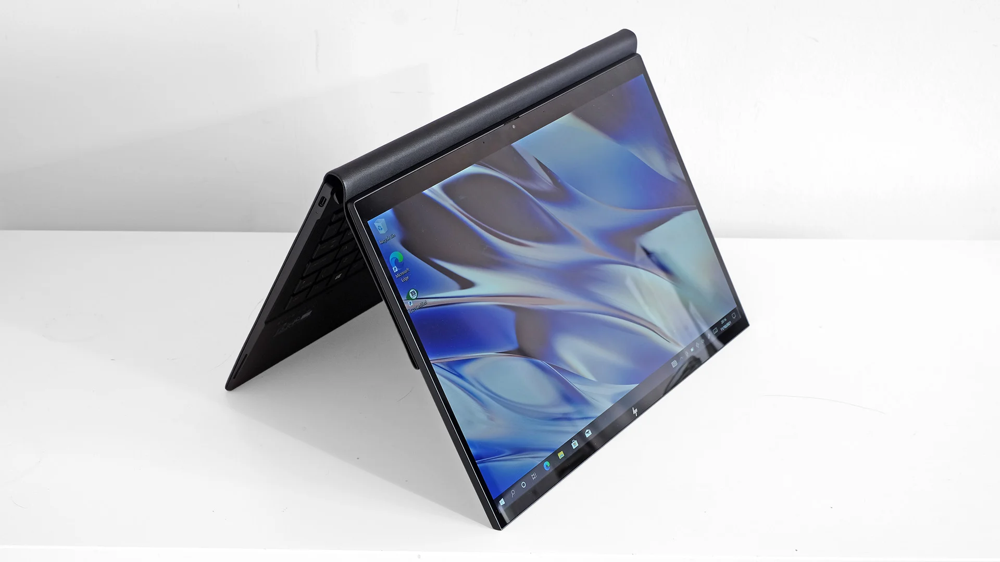

In the ever-evolving landscape of personal computing, the 2-in-1 laptop has emerged as a versatile solution that combines the functionality of a traditional laptop with the flexibility of a tablet. This innovative design has become increasingly popular among users seeking a single device that can adapt to different tasks and usage scenarios. Let's explore everything you need to know about the 2-in-1 laptop.
Table of Content
______________________________________________________________________________
______________________________________________________________________________
What is a 2-in-1 Laptop?
Andrew Williams, CC BY-NC-ND 4.0 DEED, Via Trusted Reviews
A 2-in-1 laptop is a versatile computing device that combines the features of a traditional laptop and a tablet. This hybrid design typically includes a hinge mechanism or detachable keyboard, allowing users to switch between laptop mode, featuring a physical keyboard and trackpad, and tablet mode, offering a touchscreen interface. The adaptability of a 2-in-1 laptop caters to various user needs, providing the convenience of a laptop for productivity tasks and the portability of a tablet for on-the-go usage.
How Does a 2-in-1 Laptop Work?
The key feature of a 2-in-1 laptop is its ability to transform between two primary modes: laptop mode and tablet mode. In laptop mode, it functions like a typical laptop with a keyboard and trackpad. However, the hinge mechanism allows users to rotate or detach the keyboard, transforming the device into a tablet. This adaptability offers users the convenience of a laptop for productivity tasks and the portability of a tablet for entertainment and on-the-go use.
What are the Different Types of 2-in-1 Laptops?
There are two main types of 2-in-1 laptops: convertible laptops and detachable laptops.
Convertible Laptops:
These models feature a hinge that allows the screen to rotate 360 degrees, enabling a seamless transition between laptop and tablet modes. Users can fold the screen backward to use the device as a tablet or set it in tent mode for presentations and media consumption.
Detachable Laptops:
In detachable laptops, the screen can be completely separated from the keyboard to function as a standalone tablet. This design provides more flexibility, as users can choose to use only the tablet portion when touch input is preferred or reconnect it to the keyboard for a traditional laptop experience.
What are the Benefits of Using a 2-in-1 Laptop?
1. Versatility:
The primary advantage of a 2-in-1 laptop is its versatility. Users can seamlessly switch between laptop and tablet modes, adapting to different tasks and environments with ease.
2. Portability:
The lightweight and compact design of 2-in-1 laptops makes them highly portable. Whether you're traveling, attending meetings, or simply moving around the house, the convenience of a single, adaptable device is unmatched.
3. Touchscreen Capabilities:
Most 2-in-1 laptops come equipped with touchscreen displays, enhancing the overall user experience. This feature is especially beneficial in tablet mode, allowing for intuitive navigation and interactive applications.
4. Productivity and Creativity:
With the inclusion of a keyboard, 2-in-1 laptops maintain the productivity features of traditional laptops. Users can efficiently type documents, emails, and engage in other tasks that require a physical keyboard. Additionally, the touchscreen and stylus support in some models make them ideal for creative activities like drawing and note-taking.
Are There Any Drawbacks to 2-in-1 Laptops?
While 2-in-1 laptops offer a wide range of benefits, they may not be the ideal choice for everyone. Factors such as price, performance, and durability can vary among different models. Additionally, the hybrid design may result in compromises in terms of battery life and repairability compared to traditional laptops.
Conclusion
A 2-in-1 laptop is a flexible and multifunctional device that combines the best of both laptops and tablets. Whether you prioritize versatility, portability, or touchscreen capabilities, these devices cater to a diverse range of user preferences. As technology continues to advance, the 2-in-1 laptop remains at the forefront of innovation, offering a compelling solution for users seeking a dynamic computing experience.